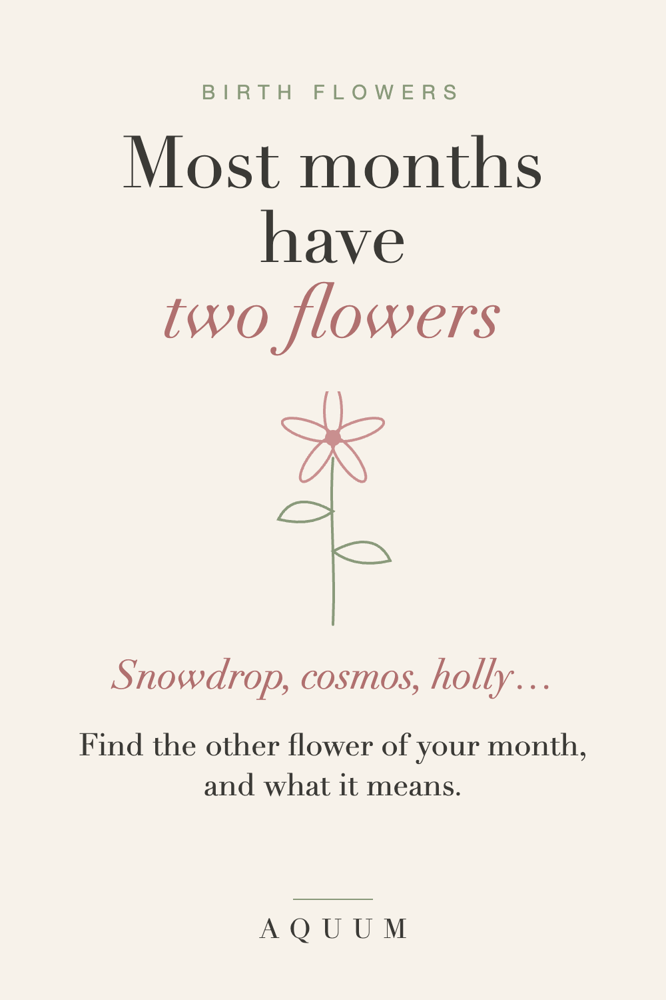
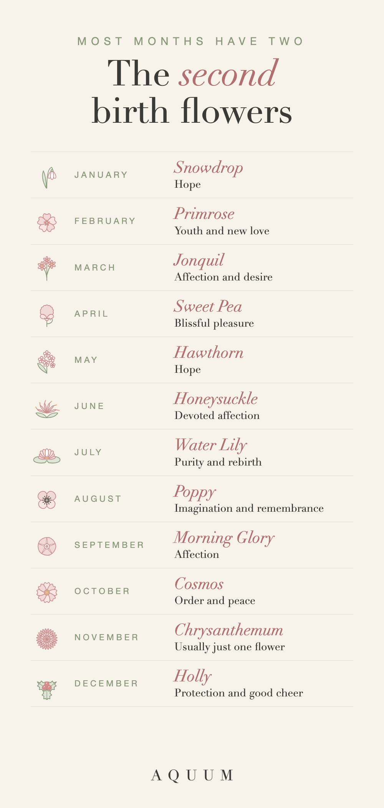

Second Birth Flowers by Month: The Other Flower of Every Month
2026-09-30
Written by the team behind Aquum, a small birth flower gift shop. How we make money.

If you've looked up a birth flower and found two answers, you're not imagining it. Most months have two birth flowers: the main one most lists agree on, and a second one that older traditions add. Sometimes the second flower fits a person better than the first.
Here is the other flower of every month, what it means, and when to choose it.

Want to color them? Download the free second birth flower coloring pages (PDF).
The second flower of every month
- January · Snowdrop: hope. It blooms while the garden still looks asleep.
- February · Primrose: youth and new love. One of the first flowers of spring.
- March · Jonquil: affection and desire. A smaller, very fragrant daffodil.
- April · Sweet pea: blissful pleasure, and "thank you for a lovely time."
- May · Hawthorn: hope. Its blossoms once marked the start of summer on May Day.
- June · Honeysuckle: devoted affection. Its vines wrap around whatever they grow on.
- July · Water lily: purity and rebirth. It rises clean from muddy water.
- August · Poppy: imagination and remembrance.
- September · Morning glory: affection, a love that renews itself every day.
- October · Cosmos: order, harmony and peace.
- November: usually just the chrysanthemum. A few lists add the peony, but most keep November to one flower.
- December · Holly: protection and good cheer.
The main flowers are in our month-by-month guide, and all twelve fit on one page in the free printable chart.
When to choose the second flower
- When the first one feels too heavy. October's marigold is also a flower of remembrance; the cosmos keeps a birthday light.
- When the first one feels too festive. December's holly says Christmas; the paperwhite doesn't. (Here the main flower is the safer birthday choice.)
- When the meaning fits better. A June couple might prefer the honeysuckle, devoted affection, over the rose.
- When you want something less expected. Everyone knows the rose. Few people know the water lily is July's.
Gift ideas with either flower
- Use both. A card that says "your month has two flowers" is a small surprise most people have never heard.
- Choose one for the gift and mention the other in the card.
- For a family bouquet, mixing first and second flowers gives the design more variety. Our tattoo ideas guide has more on combining flowers.
Each month's full guide covers both flowers in detail. Start with January or jump to your month from the complete list.